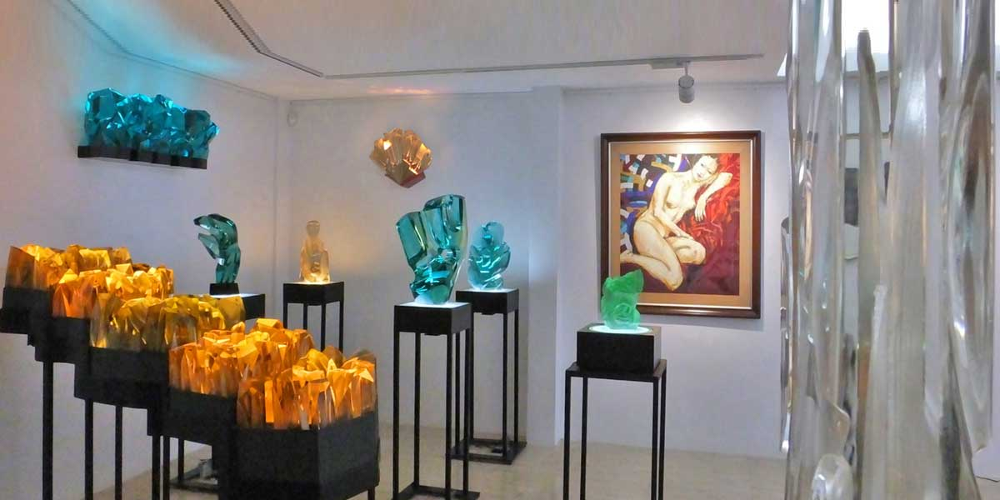
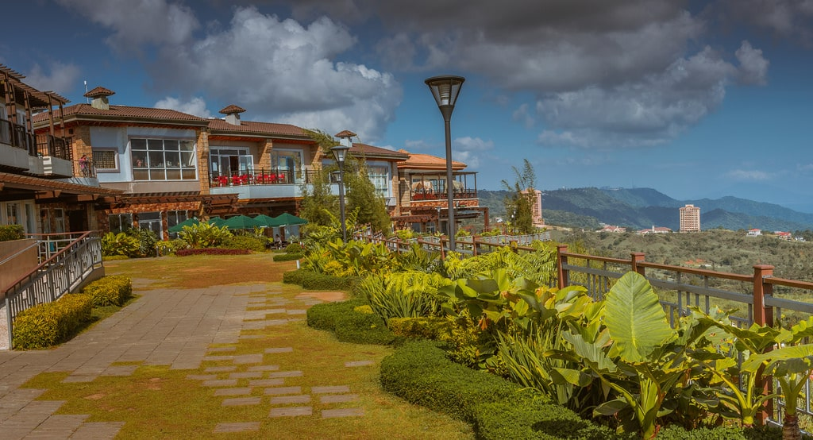

Taal Volcano and Lake are the pride and joy of Tagaytay City. With 33 eruptions, it’s the second most active volcano in the Philippines. It’s signature is a huge cratered mouth and hilly sides that spill out into the Lake. But look a little bit closer and you’ll see that within the cratered mouth is a whole other Lake. And within that Lake, is another island.
You don’t have to be religious to find the ‘Our Lady of Manaoag’ fascinating. This 50ft statue of Mary, the Mother of God, is a spot where Filipinos worship and take photos for their Facebook. There is a small church temple next to the statue with a flea market collection of a Jesus statue on the cross, photos of the prophet, and twinkling Christmas lights strung about.

Carry on from the ‘Our Lady of Manaoag’ to the Picnic Grove nearby. The grove is a picturesque and idyllic space for families and couples to come for a picnic (duh), to fly a kite, or get some exercise. From the top of the sprawling grassy hill, it looks like if you were to roll down you’d fly off into the water and land amongst the islands in the distance. The views are incomprehensibly beautiful.
The Sky Eye Ferris Wheel takes you on a sightseeing tour 63 meters above the ground; the Sky Cruiser is a pedal bike high off the ground where riders pedal on an aerial track to get views of Ta’al Lake and Volcano; the zipline catapults you down a 300-meter long line high above the ground; and that’s just the beginning.

This music center, amphitheater, art gallery, and art exhibition center is worth a visit when you’re in Tagaytay City.Throughout the year, Museo Orlina hosts a multitude of festivals with different themes. Sometimes you’ll find a music festival with a packed lineup of popular local artists and other times you’ll find stalls full of street art for sale.
Restaurant, Bed & Breakfast, Spa, Wedding venue…. Sonya’s Secret Garden does it all and does it well. The setting is magical. Tucked in a tropical garden with flowers all around and teak wood furniture that seamlessly ties it all together, this is the best place in Tagaytay City to come for lunch.
Keeping up with the scenic theme of Tagaytay, Twin Lakes Shopping Village isn’t what you’d expect in a shopping destination. This little marketplace sits on a ridge overlooking one of the most stunning valleys that you have ever seen.
Picture soaking in an outdoor hot tub while looing out over the Ta’al volcano and Lake with total peace and tranquility. This center is a place where you can go to reconnect with your soul, take the stress out of your muscles, and press your inner restart button!
If you’ve got the kids with you, the Puzzle Mansion Bed and Breakfast is a great place to stay and/or visit.In 2012, Puzzle Mansion won an award for the largest collection of jigsaw puzzles in the world. It goes without saying that the extensive collection of configured puzzles is impressive. You’ll see familiar characters such as Winnie the Pooh and Piglet, next to 3D puzzles of scary dinosaurs, puzzles that are true pieces of art.
Swing by or stay at the Ta’al Vista hotel where you’ll be treated to a 4 course Filipino meal along with a show of talented Filipinas dancing in traditional clothing. The service is fantastic with hardly any wait to be seated and staff that are very attentive to your table.


© Sernel Miranda Asunto (2019)